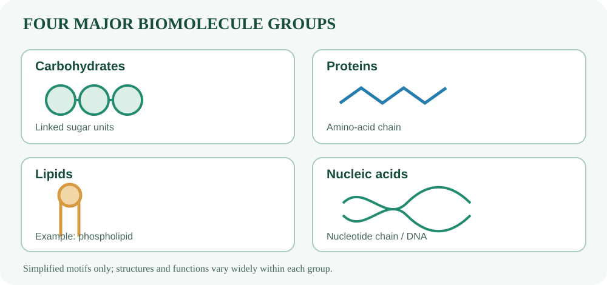
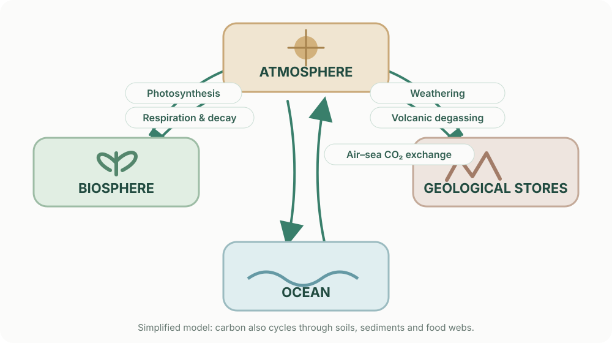

Химические процессы лежат в основе живых систем и круговоротов вещества в природе. Понимание этих процессов помогает оценивать воздействие технологий на окружающую среду.
Химия в живых системах

Четыре группы биомолекул: углеводы, белки, липиды и нуклеиновые кислоты.
01
Углеводы
Углеводы включают моносахариды, дисахариды и полисахариды; они служат источником энергии и структурным материалом.
02
Белки
Полимеры аминокислот, выполняющие каталитические, транспортные и структурные функции.
03
Липиды
Компоненты мембран, энергетические запасы и сигнальные молекулы.
04
Нуклеиновые кислоты
ДНК и РНК — полимеры нуклеотидов; каждый нуклеотид включает пентозу, фосфатную группу и азотистое основание. В ДНК содержится дезоксирибоза, в РНК — рибоза. ДНК хранит наследственную информацию, а разные виды РНК участвуют в её реализации, в том числе в синтезе белка.
05
Ферменты
Биологические катализаторы, большинство которых — белки. Они ускоряют реакции, снижая энергию активации, и обычно обладают избирательностью к субстратам.
06
Вода
Из-за угловой формы молекулы и полярных связей O–H дипольные моменты не компенсируются: кислород частично отрицателен, а водороды частично положительны. Молекулы воды образуют водородные связи, влияющие на растворяющую способность и тепловые свойства воды.
Углеводы различают по числу сахарных звеньев: моносахариды (например, глюкоза), дисахариды (сахароза) и полисахариды. Крахмал и гликоген служат запасными полисахаридами, а целлюлоза выполняет структурную функцию в клеточных стенках растений. Не все углеводы имеют формулу вида (CH₂O)ₙ.
Аминокислоты содержат аминогруппу и карбоксильную группу, связанные с одним и тем же α-углеродным атомом; к нему также присоединена боковая цепь R, определяющая свойства аминокислоты. В водном растворе их заряд зависит от pH: часто встречается цвиттерионная форма с группами –NH₃⁺ и –COO⁻. Поэтому аминокислоты амфотерны.
Белки — цепи аминокислот, соединённых пептидными связями. В учебной модели образование связи между аминогруппой одной аминокислоты и карбоксильной группой другой рассматривают как реакцию конденсации с выделением воды. В клетке рибосома формирует пептидную связь между аминокислотами, доставленными тРНК; процесс использует энергию и активированные субстраты и не сводится к простому выделению молекулы воды. Последовательность аминокислот называется первичной структурой белка.
Структура белка имеет несколько уровней: первичная — последовательность аминокислот; вторичная — локальные α-спирали и β-слои, стабилизированные главным образом водородными связями остова; третичная — общая трёхмерная укладка одной цепи; четвертичная — объединение нескольких полипептидных субъединиц и присутствует не у всех белков. Укладку поддерживают гидрофобные взаимодействия, водородные и ионные взаимодействия, а у некоторых белков — дисульфидные мостики.
В двойной спирали ДНК основания соединяются комплементарно: аденин с тимином (обычно две водородные связи), гуанин с цитозином (три). В РНК вместо тимина обычно используется урацил, который спаривается с аденином. Эти пары помогают сохранять точность копирования и передачи генетической информации.
Фосфолипиды амфифильны: их полярная гидрофильная «головка» взаимодействует с водой, а неполярные гидрофобные «хвосты» избегают контакта с ней. В водной среде это способствует самопроизвольному образованию липидного бислоя клеточных мембран.
В отличие от белков и многих углеводов, липиды не образуют единого класса полимеров с повторяющимися мономерами. Это разнообразная группа веществ, объединённых прежде всего физико-химическими свойствами.
Водородная связь — межмолекулярное или внутримолекулярное притяжение; её не следует путать с ковалентными связями O–H внутри самой молекулы воды.
Ферменты ускоряют реакции, снижая энергию активации, но не изменяют суммарное изменение энергии Гиббса ΔG и положение химического равновесия. Их активность зависит от условий, включая температуру и pH, концентрацию субстрата и регуляторы; сильные отклонения условий могут изменить структуру фермента. Некоторые каталитические РНК также существуют.
Круговорот углерода
Углерод перемещается между атмосферой, океаном, почвами, горными породами и живыми организмами. Фотосинтез связывает CO₂, а дыхание, разложение и сжигание топлива возвращают его в атмосферу.
6CO₂ + 6H₂O → C₆H₁₂O₆ + 6O₂

Уравнение фотосинтеза — суммарная модель сложного многостадийного процесса. Оно не описывает все промежуточные реакции и регуляцию.
Сжигание ископаемого топлива быстро переносит углерод из долгосрочных геологических резервуаров в атмосферу. CO₂ поглощает часть уходящего инфракрасного излучения и усиливает парниковый эффект. Растворение CO₂ в океане сдвигает кислотно-основные равновесия, повышает концентрацию H⁺ и снижает pH морской воды.
Модель концентрации CO₂
Измените условную долю углекислого газа в смеси газов и посмотрите, как меняется концентрация в ppm.
420 ppm
Это математическая иллюстрация пересчёта доли, а не текущие измерения атмосферы.